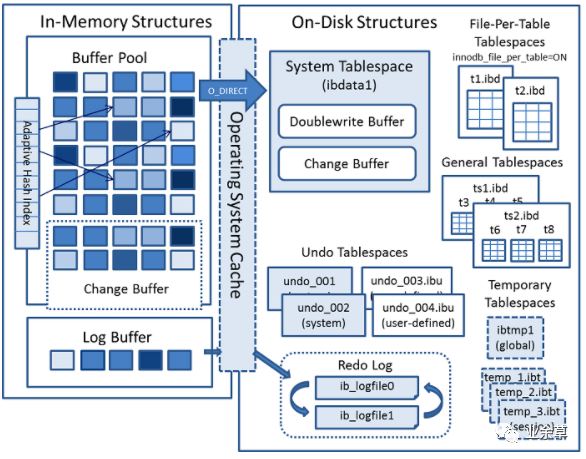
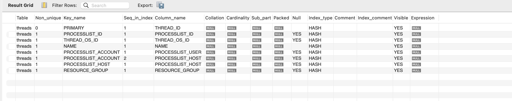
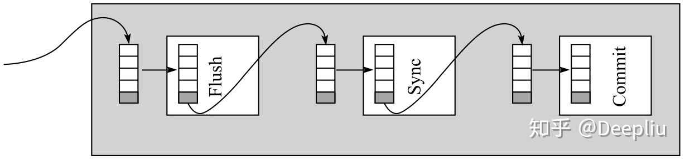

MySQL 存储引擎 InnoDB 技术内幕

前言
MySQL 是处理海量数据（尤其 是OLTP 写入）时仍能获得最佳性能的最佳选择之一，它的 CPU 效率可能其他任何基于磁盘的关系型数据库所不能匹敌的-但它应该能够匹敌 Redis。
Think Different 而不是 Think Differently，这意味着要思考不同的东西，而不只是思考不同的方式。
不要相信网上的传言，去做测试，根据自己的实践做决定。很多伟大的作者写的伟大的书里面，关于性能的说法都来源于他们个人的随身电脑的直观测试。
change buffer 是 inert buffer 的升级版本。
MySQL 体系结构和存储引擎
定义数据库和实例
- 数据库：物理操作系统文件或其他形式文件类型的集合。
- 实例：操作系统后台进程（线程和一堆共享内存）。
- 存储引擎：基于表而不是基于库的，所以一个库可以有不同的表使用不同的存储引擎。
InnoDB 将数据存储在逻辑的表空间中，这个表空间就像黑盒一样。
存储引擎不一定需要事务。比如没有 ETL 的操作，单纯的查询操作不需要考虑并发控制问题，不需要产生一致性视图。
NDB 存储引擎是一个集群存储引擎，类似 RAC 集群。不过与 Oracle RAC share everything 不同，NDB share nothing，而且把数据放在内存中。
如果不需要事务，文件系统就可以当做数据库（这话有点以偏概全，文件系统没有做过查询优化，无格式不易于查找，SQL 的 structure 体现不出来）。数据库区别于文件系统的地方就是，数据库可以支持事务（不代表必然使用事务）。
用户可以按照文档 16 章自己写自己的存储引擎。
InnoDB 的存储引擎
InnoDB 是 transactional-safe 的 MySQL 存储引擎。
InnoDB 存储引擎概述
InnoDB 当前支持每秒 800 次的写入，也可以存储 1tb 以上的数据。
InnoDB 的体系结构可以大体包括：
后台线程 + 内存池 + 文件

后台线程包括
master thread

负责异步地将缓冲池中的数据异步地刷新到磁盘，dirty page refresh、merging insert buffer。
1 | |
循环切换是用 goto 来做的，这让一个单线程的执行流程有了协程一样的多任务跳转处理能力。
IO thread
在 InnoDB 中大量使用 AIO 来处理 IO 写请求。
purge thread
purge 操作是从 master thread 里单独分离出来的一部分职能，专门处理 undo log。
page cleaner thread
定时将之前版本中的 dirty page refresh 的职责分离出来。
内存
要懂得看内存要懂得看各种监控：


如果有必要，要直接看 InnoDB 的状态show engine innodb status
Type Name Status InnoDB
===================================== 2022-03-05 16:04:44 0x70000dda3000 INNODB MONITOR OUTPUT
===================================== Per second averages calculated from the last 0 seconds
----------------- BACKGROUND THREAD
----------------- srv_master_thread loops: 6 srv_active, 0 srv_shutdown, 110008 srv_idle srv_master_thread log flush and writes:
0
---------- SEMAPHORES
---------- OS WAIT ARRAY INFO: reservation count 2 OS WAIT ARRAY INFO: signal count 2 RW-shared spins 0, rounds 0, OS waits 0 RW-excl spins
0, rounds 0, OS waits 0 RW-sx spins 0, rounds 0, OS waits 0 Spin
rounds per wait: 0.00 RW-shared, 0.00 RW-excl, 0.00 RW-sx
------------ TRANSACTIONS
------------ Trx id counter 6151 Purge done for trx’s n:o < 6149 undo n:o < 0 state: running but idle History list length 0 LIST OF
TRANSACTIONS FOR EACH SESSION:
—TRANSACTION 421658550605264, not started 0 lock struct(s), heap size 1128, 0 row lock(s)
—TRANSACTION 421658550604472, not started 0 lock struct(s), heap size 1128, 0 row lock(s)
—TRANSACTION 421658550603680, not started 0 lock struct(s), heap size 1128, 0 row lock(s)
—TRANSACTION 421658550602888, not started 0 lock struct(s), heap size 1128, 0 row lock(s)
—TRANSACTION 421658550602096, not started 0 lock struct(s), heap size 1128, 0 row lock(s)
—TRANSACTION 421658550601304, not started 0 lock struct(s), heap size 1128, 0 row lock(s)
-------- FILE I/O
-------- I/O thread 0 state: waiting for i/o request (insert buffer thread) I/O thread 1 state: waiting for i/o request (log thread) I/O
thread 2 state: waiting for i/o request (read thread) I/O thread 3
state: waiting for i/o request (read thread) I/O thread 4 state:
waiting for i/o request (read thread) I/O thread 5 state: waiting for
i/o request (read thread) I/O thread 6 state: waiting for i/o request
(write thread) I/O thread 7 state: waiting for i/o request (write
thread) I/O thread 8 state: waiting for i/o request (write thread) I/O
thread 9 state: waiting for i/o request (write thread) Pending normal
aio reads: [0, 0, 0, 0] , aio writes: [0, 0, 0, 0] , ibuf aio reads:,
log i/o’s:, sync i/o’s: Pending flushes (fsync) log: 0; buffer pool: 0
937 OS file reads, 467 OS file writes, 58 OS fsyncs
0.00 reads/s, 0 avg bytes/read, 0.00 writes/s, 0.00 fsyncs/s
------------------------------------- INSERT BUFFER AND ADAPTIVE HASH INDEX
------------------------------------- Ibuf: size 1, free list len 0, seg size 2, 0 merges merged operations: insert 0, delete mark 0,
delete 0 discarded operations: insert 0, delete mark 0, delete 0 Hash
table size 34679, node heap has 0 buffer(s) Hash table size 34679,
node heap has 0 buffer(s) Hash table size 34679, node heap has 0
buffer(s) Hash table size 34679, node heap has 0 buffer(s) Hash table
size 34679, node heap has 0 buffer(s) Hash table size 34679, node heap
has 0 buffer(s) Hash table size 34679, node heap has 2 buffer(s) Hash
table size 34679, node heap has 6 buffer(s)
0.00 hash searches/s, 0.00 non-hash searches/s
— LOG
— Log sequence number 19606903 Log buffer assigned up to 19606903 Log buffer completed up to 19606903 Log written up to
19606903 Log flushed up to 19606903 Added dirty pages up to
19606903 Pages flushed up to 19606903 Last checkpoint at
19606903 23 log i/o’s done, 0.00 log i/o’s/second
---------------------- BUFFER POOL AND MEMORY
---------------------- Total large memory allocated 0 Dictionary memory allocated 390927 Buffer pool size 8192 # 注意：意味着总共有8192个页（通常是16k一页） Free buffers 0 # 注意：Free List 为 0
7040 Database pages 1144 Old database pages 402 Modified db pages # 注意：缓冲池里面有7040个数据（库）页，这就是 LRU list 的总长度
0 Pending reads 0 Pending writes: LRU 0, flush list 0, single
page 0 Pages made young 20, not young 0 # 注意：Made Young 意味着从 LRU 的队尾淘汰了一页，加入 new 里。这里 Made Young 发生了 20 次。
0.00 youngs/s, 0.00 non-youngs/s Pages read 914, created 233, written 351
0.00 reads/s, 0.00 creates/s, 0.00 writes/s No buffer pool page gets since the last printout Pages read ahead 0.00/s, evicted without
access 0.00/s, Random read ahead 0.00/s LRU len: 1144, unzip_LRU len:
0 I/O sum[0]:cur[0], unzip sum[0]:cur[0]
-------------- ROW OPERATIONS
-------------- 0 queries inside InnoDB, 0 queries in queue 0 read views open inside InnoDB Process ID=153, Main thread ID=0x70000d0ec000
, state=sleeping Number of rows inserted 16568, updated 0, deleted 0,
read 16568
0.00 inserts/s, 0.00 updates/s, 0.00 deletes/s, 0.00 reads/s Number of system rows inserted 0, updated 315, deleted 0, read 6557
0.00 inserts/s, 0.00 updates/s, 0.00 deletes/s, 0.00 reads/s
---------------------------- END OF INNODB MONITOR OUTPUT
not young 0 意味着没有 made young 失败的情况，这通常意味着 innodb_old_blocks_time 这个 old block 最小时间为0。
这个统计只统计过去一段时间的状态（ Per second averages calculated from the last 0 seconds），而非当前状态。
大规模的查询（如归档）会导致 LRU 列表大规模刷新，一定程度上会让 buffer pool hit rate 指标下降（低于95%对性能的影响会非常显著）-可以一定程度上被 MRR （Multi-Range-Read）解决。
LRU len: 1144, unzip_LRU len: 0，意味着 16k的页有1144个，其中压缩页（2k、4k、8k）0个（LRU list 包含 unzip list）。
History list length 意味着 undo log 的数量。
缓冲池
innodb_buffer_pool_instances可以控制缓冲池的实例数。
为了弥合 cpu 和磁盘的性能鸿沟，基于磁盘的数据库必然引入内存缓冲池，让页的读和写操作都快一点。
主要的内存缓冲池有：
- innodb_buffer_pool
- redo_log_buffer
- innodb_additional_mem_pool_size
有了内存缓冲池，就允许出现脏页。把脏页刷新到磁盘上，是通过 checkpoint 机制实现的。
LRU List、Free List 和 Flush List
InnoDB 使用这三种 list，来调度不同的脏页。
所有的数据页，调度进内存，都要调度进 LRU List 里（调度进某个 midpoint）。所以，有时候查询数据会导致新页加载进内存，脏页刷盘，引发 checkpoint。
LRU List
InnoDB 使用改进的 LRU 算法，SHOW VARIABLES LIKE '%innodb_old_blocks_pct%'可以看到新加载的页会被放到列表队尾的百分之几的位置（通常为37，也就是说，新页后都是老页，老页总共占据37%的比例），而不是队头，这个位置被称为 midpoint。
new list（真正的热数据占全部数据量的63%） -> midpoint -> old list
这种 midpoint 设计保证了：首次被触达 hot 数据不会导致其他热点数据页被淘汰。某些 ad-hoc的大规模查询的数据页也需要经过时间考验才会被提升到真正的热页上。
Free list
Free list 管理了最原始的页，LRU list 需要页的时候，先从 free list 取内存。取完以后，再做淘汰 old list，移动页到 new list 的操作。
Flush list
redo log buffer
这个 buffer 是 wal 写入磁盘之前的 buffer。注意 wal 的 buffer 刷新到磁盘，不是脏页的刷新到磁盘（checkpoint 实际上就是 dirty page refresh）。
通常情况下，每一秒钟这个 buffer 会被刷新到磁盘上（通过 page cleaner thread），只要用户每秒产生的事务量在这个缓冲大小之内即可。
总共有三种情况下会发生内容刷新：
- 一秒定时
- 事务提交
- buffer 的大小小于 1/2时
这代表了几种策略：
- 时间
- 空间阈值
- 持久化事件
- 轮询
additional mem pool
管理一些 buffer controll block。
checkpoint 技术

checkpoint 和 redo log buffer 都是 redo log 机制的一部分，现将全机制完整叙述如下：
- MySQL 为了性能，大部分的操作都需要在 buffer pool 里面执行。
- 但操作对于数据的修改却必须正确地持久化（保证 A 和 D）。
- 事务对于buffer pool 的数据页的修改，在提交之前，必须保证所有的日志都写入了 redo log，而且事务的提交要求 redolog 确切地从 redo log buffer（也是环状的）被完整地写入到 redo log file （这是环状的）里，这意味着 WAL 写完了。
- 表面上看起来，有了 redo log，连修改磁盘上的数据页也不需要了。因为 redo log 只要无限大，只要保证 redo log 被写入就行。但实际上资源并不是无限的，而且只使用 redo log 数据库的灾害恢复时长会无限长，所以 redo log 里蕴藏的修改应该尽力被刷新到磁盘上。
- 我们可以简单认为，buffer pool 的修改和 wal 的写入是同时的，wal 从 redo log buffer flush 到 disk 之后才能 commit 成功。checkpoint 意味着 buffer pool 的修改被同步到磁盘里。
- checkpoint 保证，在灾难恢复时，过了 checkpoint 的 redo 日志才需要关注。这样可以减少宕机恢复时间。
- 重做日志不可能无限被使用（环状意味着有限），所以一旦要重用重做日志，必然带来强制的 checkpoint，导致脏页至少被刷新到 redo log 当前的位置。
- **checkpoint 只做一件事，刷新脏页到某个 LSN 上。所有的 redo log 的操作在事务提交时都做完了。**checkpoint 是“脏页刷盘”的因，而不是果。
标记 redolog 的位置方法是 LSN（log sequence number）。从 checkpoint 这个概念的数值来看，是根据 LSN 来定位哪些 redo log 对应的修改已经被同步到表空间里，但 checkpoint 不是持久化 journal/wal 的日志（这些日志实际上是 tx commit 的时候 flush redo log 的时候被持久化的，也没有把 redo log merge 到表空间的技术），是刷新脏页的技术（更新表空间主要依赖于脏页）！这个细微的差别和其他 WAL 的实现还是有差别的，这是 buffer pool 相关技术带来的特定结果！
有以下几种情况会触发 checkpoint：
- Master Thread 定时刷新脏页
- LRU 脏页列表大小不够
- redo log 大小不够（发生recycling）
- 脏页数量太多（超过一定的阈值）
- 数据库关闭时
checkpoint 和 kafka 的 offset 的设计思路一直，都是基于对 sequence number 上维护一个游标，把已确认的操作序号和未确认的操作序号隔开。
innodb 关键特性
Insert Buffer
Insert Buffer 既是内存缓冲池的一部分，也是物理页的一部分，同时存在于两处。
比较容易造成顺序插入的两种索引形式：自增主键和时间。
Insert Buffer 的用意是为了提升非唯一的辅助索引的插入性能。注意，主键是不需要依靠change buffer的，这侧面也说明了一个可能的设计思路：主数据的修改可以直接修改 data page 和 index page，而不需要用到 change buffer，相当于引入一个辅助平衡树，避免了对主平衡树的修改。
对于这种索引，为了减少随机插入，InnoDB 在插入更新数据页的时候，会想办法校验缓冲池里有没有该数据页。如果有，则先插入缓冲池里的数据页；否则，在插入缓冲里插入一个特殊的记录，欺骗（mock）全流程，然后继续剩下的 buffer pool 操作。
Insert Buffer 里的数据页和真正索引的数据页的合并，就是 Insert Buffer 合并。
Change buffer
Change buffer 是高版本的 MySQL 引入的，虽然 InnoDB 的状态统计里依然频繁出现 Insert Buffer 的字眼，但其实现在 Change buffer 包括：Insert Buffer、Delete Buffer、Purge Buffer（不是 Udpate Buffer，不过它也管 Update 操作，update 在 MySQL 里其实是被表达为删除和新增两种操作的叠加），囊括了所有的 DML 类型。
InnoDB change buffer可以对三种类型的操作进行缓存：INSERT、DELETE-MARK 、DELETE操作，前两种对应用户线程操作，第三种则由purge操作触发。
这些 Buffer 的应对对象仍然是非唯一的辅助索引。
Insert Buffer 的实现
全局有一个 Insert/Change Buffer b+树，管所有的表（这样这个数据结构的复杂度会非常高，架构上这样做的 trade off 到底是什么？），存放在 ibdata 中。这就是上面说的“物理页的一个组成部分”。
非唯一的辅助索引在插入到数据库中时，会构造一条记录，然后插入到这棵树中。当读写发生的是，只要需要读最终数据，都要触发 merging。这种索引的性能提升借助于不做唯一性检查。
这种缓冲树的设计，类似于 LSM tree 的前面的缓冲层。
辅助索引页在在 Insert/Change Buffer 中，是通过(space,page_no)来管理的，这个数据结构记录的是真正的表空间里真正的辅助索引记录所在的位置。
插入、删除和更新操作会并存于一棵B+树里，所以这些“缓冲记录”之间是存在相对顺序的，按照正确的顺序 replay 才能得到真正正确的辅助索引的值。
所以实际上大致上可以认为存在四个区域（以下部分是猜测，书中有歧义）：
- 内存里：Change Buffer 的内存形态，Buffer Pool 的数据页、索引页的内存形态。
- 磁盘上：Change Buffer B+ 树（按照 MySQL 官方文档的说法，这个数据结构可以帮助 MySQL 度过重启，用冷存储度过重启，也是一种经典的设计思路），辅助索引表空间
buffer 里有一般的 Buffer Pool 和 Change Buffer 两种两种形态，磁盘上只有一种 redo log，所以对页的修改可以被checkpoint从内存同步到磁盘上。按照 MySQL 的官方文档，merge 应该专指从 Change Buffer 合并修改到 Buffer Pool 的数据页上（Physically, the change buffer is part of the system tablespace, so that the index changes remain buffered across database restarts. The changes are only applied (merged) when the pages are brought into the buffer pool due to some other read operation.）。
Insert Buffer 的意义
高性能存储引擎使用 Insert Buffer 来获取了一些 LSM-Tree 有的优点。
两次写（doublewrite）

写入一个数据页不一定能够原子成功。有可能发生部分写失效（partial page write）。因为 redo log 是物理日志，所以强依赖于页的状态。
doublewrite 的意思是，重做发生时，需要先把页副本还原出特定的页，然后再 apply redo log。
innodb 在刷新脏页时，会先写入 double write buffer，然后双写到表空间里的 double write extent 里，最后再用 fsync 把脏页刷新到 ibd 数据文件里。
自适应哈希索引（AHI）
innodb 会自动根据访问的频率和模式来自动地某些热点页建立哈希索引。
AHI 有一定的使用场景限制：
- 自适应哈希索引只支持等值搜索
- 索引页的访问模式很像 JIT 要求统计的访问模式，按照次数确定是否是热点页，满足要求才生成相应的 AHI。
异步 io
这里的异步 io 指的是用户发起的一次 sync io 可能触发多个异步io，将多个结果 merge 起来一起返回。
native aio 需要操作系统的支持。可以在编译的时候通过引入 libaio 库一起编译解决。
刷新邻接页（flush neighbor page）
机械硬盘需要这个功能，固态硬盘不怎么需要。
启动、关闭与恢复
默认的情况下，MySQL 会在关闭和重启时，把脏页刷新回磁盘。所以有时候 MySQL 重启的速度可能非常慢，因为数据库的 recover 或者 repair 操作被留到了重启时。
数据库出现任何的 corruption，都可以在重启时的 error log 里体现出来。如果出现了大表的 corruption，修复时间可能很长。有经验的用户可能会禁用重启时的自动修复（通过 innodb_force_recovery），自己手动修复被破坏的表。
文件

参数格式
1 | |
要注意有些参数不能被修改，或者只能在会话中更改。
binlog 格式
现在默认的 binlog 格式是 row。这个格式对 READ COMMITTED 并发操作行较友好，不会丢失更新，也能兼容随机函数和触发器。
表空间

InnodDB 允许多张表共用若干个共享表空间，也允许每张表一个表空间。
由于设置参数innodb_file_per_table=ON，因此产生了单独的.ibd表空间文件。需要注意的是，这些单独的表空间文件仅存储该表的数据、索引和插入缓冲 bitmap 等信息，其余信息还是存放在默认的表空间中。
redo log file
每个InnoDB存储引擎至少有1个重做日志文件组（group），每个文件组下至少有2个重做日志文件，如默认的ib_logfile0、ib_logfile1。为了得到更高的可靠性，你可以设置多个镜像日志组（mirrored log groups），将不同的文件组放在不同的磁盘上。日志组中每个重做日志文件的大小一致，并以循环方式使用。InnoDB存储引擎先写重做日志文件1，当达到文件的最后时，会切换至重做日志文件2，当重做日志文件2也被写满时，会再切换到重做日志文件1中。
这也是一种有意思的 double buffer 设计。
一个拥有3个重做日志文件的重做日志文件组：


每次写入一段重做日志只写512Byte，大小为一个扇区，不会出现部分写失败，所以此处无需类似双写的设计。
表
总是存在主键
InnoDB 总会选择一个非空唯一列作为主键。把数据按照主键顺序存储的表，叫作索引组织表（index organized table），索引即数据，数据即索引。
tablespace 的结构

tablespace 下分为 段 segment、区 extent 和页 page。
注意，tablespace 的 segment 里有 rollback segment。
共享表空间里存储了 undo log page，只有 full purge 可以回收。
行
默认的行格式是 compact。这个大小可以在表的 ddl 的 ROW_FORMAT 里指定。

hexdump -C -v mytest.ibd > /home/zhoujy/mytest.txt，找到 supremum 这一行。
左边的区是地址空间，每个地址空间间隔 16字节。
中间的空间是内容，16个格子，每个格子是2个16进制数，即一个字节
右边的空间是对内容的人类可读解释。
0000c070 73 75 70 72 65 6d 75 6d 03 02 02 01 00 00 00 10 |supremum…|
0000c080 00 25 00 00 00 03 b9 00 00 00 00 02 49 01 82 00 |.%…I…|
0000c090 00 01 4a 01 10 61 62 62 62 62 63 63 63 03 02 02 |…J…abbbbccc…|
0000c0a0 01 00 00 00 18 00 23 00 00 00 03 b9 01 00 00 00 |…#…|
0000c0b0 02 49 02 83 00 00 01 4b 01 10 61 65 65 65 65 66 |.I…K…aeeeef|
0000c0c0 66 66 03 01 06 00 00 20 ff a6 00 00 00 03 b9 02 |ff… …|
0000c0d0 00 00 00 02 49 03 84 00 00 01 4c 01 10 61 66 66 |…I…L…aff|
0000c0e0 66 00 00 00 00 00 00 00 00 00 00 00 00 00 00 00 |f…|
第一行数据:
03 02 02 01 /变长字段/ ---- 表中4个字段类型为varchar，而且没有NULL数据，并且每一个字段君小于255。
00 /NULL标志位，第一行没有null的数据/
00 00 10 00 25 /记录头信息,固定5个字节/
00 00 00 03 b9 00 /RowID,固定6个字节,表没有主键/
00 00 00 02 49 01 /事务ID,固定6个字节/
82 00 00 01 4a 01 10 /回滚指针,固定7个字节/
61 62 62 62 62 63 63 63 /列的数据/
要找到 RowID，要先找到5字节的记录头，要找到记录头，要找到一字节的 null标志位，null标志位在变长字段列表之后，要知道表的变长字段列表，要先知道表的结构，这应该要去引用 .frm 文件了。这里的03 02 02 01 的意思是，第四个varchar 字段实际大小是4字节，第三个varchar 字段实际大小是2字节，第二个varchar 字段实际大小是2字节，第一个varchar 字段实际大小是1字节。
溢出行问题

有些记录的字段太长了，一页装不下（一页中必须至少装两条记录），会导致页溢出（off page），有些数据被放在其他页里。
新版的 Barracuda 格式包括：Compressed 和 Dynamic。

InnoDB 数据页结构

InnoDB 管理数据库最小的磁盘单位是页。
- File Header（文件头）。
- Page Header（页头）。
- Infimun+Supremum Records。上确界和下确界，两条虚拟 record。
- User Records（用户记录，即行记录）。
- Free Space（空闲空间）。也是一个链表。到目前为止已经有3个链表，Buffer Pool、Change Buffer、数据页。
- Page Directory（页目录）。
- File Trailer（文件结尾信息）。它存了一些 checksum，可以通过它校验一个页是否 corrupt。

Page Directory
Page Directory（页目录）中存放了记录的相对位置（注意，这里存放的是页相对位置，而不是偏移量），有些时候这些记录指针称为Slots（槽）或者目录槽（Directory Slots）。与其他数据库系统不同的是，InnoDB并不是每个记录拥有一个槽，InnoDB存储引擎的槽是一个稀疏目录（sparse directory），即一个槽中可能属于（belong to）多个记录，最少属于4条记录，最多属于8条记录。
Slots中记录按照键顺序存放，这样可以利用二叉查找迅速找到记录的指针。假设我们有（‘i’，‘d’，‘c’，‘b’，‘e’，‘g’，‘l’，‘h’，‘f’，‘j’，‘k’，‘a’），同时假设一个槽中包含4条记录，则Slots中的记录可能是（‘a’，‘e’，‘i’）。
由于InnoDB存储引擎中Slots是稀疏目录，二叉查找的结果只是一个粗略的结果，所以InnoDB必须通过recorder header中的next_record来继续查找相关记录。同时，slots很好地解释了recorder header中的n_owned值的含义，即还有多少记录需要查找，因为这些记录并不包括在slots中。
需要牢记的是，B+树索引本身并不能找到具体的一条记录，B+树索引能找到只是该记录所在的页。数据库把页载入内存，然后通过Page Directory再进行二叉查找。只不过二叉查找的时间复杂度很低，同时内存中的查找很快，因此通常我们忽略了这部分查找所用的时间。
这里的 slot 类似 Redis 的 Slot（不知道 Redis 是否受这个设计启发）。
字符集
在当代 InnoDB 里，如果使用了多字节字符集，则 CHAR(N) 指的是字符数而不是字节数。
约束
RDBMS 和 File System 之间的差别在于：RDBMS 支持格式、事务与约束（实体、参照、自定义）。
MySQL 支持：
- 数据类型
- 外键
- 触发器
- Default
MySQL 不支持 Check 约束，但可以通过 ENUM 和 Set来解决部分需求-不过最好不要这样做。
触发器
最多可以对一个表建立 6 个触发器：
- Before：Insert/Update/Delete
- After：Insert/Update/Delete
视图
一个被命名的续表，没有相应的物理存储（没有tablespace-ibdata）。
物化视图
对普通表进行 join 得到有物理存储的视图表。
这种预计算的表的特点是只可以读不可以插入。
分区表
水平分区，将同一张表的不同记录分配到不同的物理文件中。
垂直分区，将同一张表的不同列分配到不同的物理文件中。
要顺着数据增长的维度，设计切线。行是无限增长的，列是有穷增长的，切行不如切列。
开分区表的缺点之一是会让某些查询反而变慢-在某些查询不知不觉跨分区的时候。
索引与算法
不恰当的索引设置可以使 iostat 里的磁盘利用率高达100%。
InnoDB 支持的索引有：
- B+树
- 哈希索引
- 全文索引
B+树的 B 不是代表 Binary，而是代表 Balance。
要澄清一个逻辑错误：聚集索引的连续，并不是在物理上连续的，而是在逻辑上连续的。只要页之间是指针相连的，逻辑上的连续加上数据和索引一起存储可以解决大部分顺序问题。

聚簇索引的非叶子节点上有指向其他节点的 pointer，叶子节点本身也是一个双链表。辅助索引上记录的索引值有时候被称作 bookmark。

按照本书的说法，在一个三层的辅助索引树上，找到主键需要3次IO，在找到主键后，再在三层的聚簇索引树上找到真正的记录还需要3次IO，一共6次IO。为什么不是四次呢？
索引管理

Fast Index Creation
MySQL5.5版本之前存在一个问题即对于索引的添加或者删除的这类DDL操作，MySQL的操作过程为：
- 创建临时表，表结构为alter table新定义的结构。
- 把原表中的数据导入到临时表。
- 接着删除原表。
- 最后把临时表重名为原来的表名。
如果通过上面的方式添加或者删除索引，需要很长的时间。
InnoDB1.0.x开始支持一种名为Fast Index Creation(快速索引创建)的索引创建方式----简称FIC
对于辅助索引的创建，InnoDB会对表加S锁。创建过程中不需要重建表。因此速度提高很多。删除索引操作就更简单了，InnoDB只需要更新内部视图，并将辅助索引的空间标记为可用，同时删除MySQL数据库内部视图上对该表的索引定义即可。
FIC在索引的创建过程中加了S锁，所以只能对表进行读操作，如果有大量的事务需要对目标表进行写操作，那么数据库的服务同样不可以使用，FIC方式只限定于辅助索引，对于主键的创建和删除同样需要重建一张表。
Online Schema Change(在线架构改变)
OSC 是最初的尝试的“在线”（事务的创建过程中，仍然有读写事务对标进行操作）该表的构思是 Facebook 的工程师落地的。
Online DDL
当代的 MySQL 有两个重要的版本，5.6 和 5.8（或者 8.0）。
5.6 开始 MySQL 自己内置 Online DDL。Online DDL 的其他工具还包括 Github 的 Ghost 或者 Percona percon tool kits。
Cardinality
Cardinality 的统计是放在存储引擎层（InnoDB）的（而不是在 Server 层），即使是在存储引擎层里做统计，这个值也是 Sample 值，并不准。analyze table 可以修复一些不准的情况。
索引选择
一般索引选择的顺序
- 辅助索引覆盖且可排序
- 辅助索引覆盖
- PK 无需回表
- 辅助索引回表
很多时候 MySQL 甚至会全表扫描而不使用索引：
- range 扫描
- join
绝大多数情况下查询优化器的索引选择是准的，如果要选择索引，FORCE INDEX 而不是 USE INDEX。
ICP 优化
using index condition ，可以减少在 Server 层过滤的开销。
全文检索
Full-Text Search，在长文本里检索出任意的内容来。
锁
注意意向锁之间的兼容性。
什么是锁
必须先经过锁或者隔离，并发访问资源才是安全的操作。
MySQL 对 LRU 列表的操作都是需要锁的。
Lock 和 Latch
我们先讨论 Lock，对数据结构和事务而言，Lock 才是它们持有的东西，Latch 是线程持有的东西。
InnoDB 里的锁
锁的类型
- X Lock
- S Lock
InnoDB 存储引擎支持多颗粒度（grannular）锁定。把上锁对象看作一棵树，加锁要先在粗颗粒度上加锁，任意一部分的锁等待，都会让事务操作阻塞。

非一致性锁定读

在 RC 下，非一致性锁定读总是读取行的最新快照版本。
一致性读
就是当前读，仅就读而言，就是
select lock in share modeselect for update
外键与锁
Oracle 数据库不会自动添加外键索引，用户必须手动添加，否则会触发死锁，但 MySQL 不会。
锁的算法
- Record Lock
- Gap-Lock
- Next-Key-Lock
范围查找非常危险，有一些很容被忽略的地方：
- 对唯一索引而言，查找不到记录仍然会触发 Gap-Lock
- 对任意索引都会向左向右再伸展出 Gap-Lock，这样行插入总是能被挡住的-查找非常容易受 insert 和 update 影响，所以 Record Lock 主要挡 update，Gap-Lock 挡意外的 insert。
- 若唯一索引有多个列，查找仅查询多个唯一索引中的其中一个，这样的查询会变成 range 查询（explain 中的 type），不是 point 查询，很容易触发 Next-Key Lock。
解决 Phantom Problem
这本书把不可重复读窄化为 Phantom Problem，把 Phantom Problem 窄化为看不到原本看不到的行。
通过查询层面实现唯一性检查：
1 | |
这种插入之前的检查可以保证插入的唯一性，比加 X 锁稍微友好一些，但可能在语句1和语句2之间出现一个间隙，如果有其他事务也求共享锁，则会发生死锁，不如直接加 x 锁。
锁问题
脏页：缓冲池被修改但没有被持久化的页。
脏数据：事务对缓冲池中行记录的修改，并没有被提交。
如果读到了脏数据，即一个事务可以读到另外一个事务未提交的数据，违反了数据库的隔离性。
脏读发生的事务隔离级别是READ UNCOMMITTED，目前大部分数据库都至少设置为READ COMMITTED。InnoDB默认的隔离级别是READ REPEATABLE。
如果可以的话，应该在数据库层面解决丢失更新和各种脏读写的问题。
阻塞
innodb 在很多情况下可以抛出异常，但遇到异常是应该提交事务还是回滚事务是需要专门配置的：
- innodb_lock_wait_timeout 等待时间到抛出异常
- innodb_rollback_on_timeout 遇到超时是否回滚
死锁
解决死锁最简单的方式就是把任何等待都转化为回滚（而不是等待），但这会降低并发事务完成数量。也可以通过等待超时再回滚的方式来处理（等待超时有可能是正在产生死锁还未检测出来，也可能没有遇到死锁，只是不想等超长操作完成了），这就是实践中大家选择的方案。
当前数据库普遍使用 wait-for-graph （基于锁的信息链表和事务等待链表构建）来进行死锁检测。


大部分的情况下，InnoDB 对异常的处理方法都是可配的，但一旦它检测到死锁，存储引擎会立刻回滚一个事务。
锁升级
Lock Escalation 是很多数据库需要考虑的情况。InnoDB 使用位图来管理锁。在 SQL Server里，大量加锁会增大开销，所以锁可能会升级（如用一个表锁代替1000个行锁），锁升级减少了管理锁的成本，但是降低了并发性。但 MySQL 里不存在这个问题。
小结
一个高性能、高并发的数据库应用必须建立在充分理解锁的基础上。
事务
容易被忽略的经典定义：事务是通过一批操作，把数据库从一种一致性状态转换为另一种一致性状态。
文件系统 -格式化-> MyISAM -transactional-> InnoDB
认识事务
不到特定隔离级别的事务，不能持久非易失存储的事务，都不算严格意义上的事务。
事务的分类
扁平事务（Flat Transactions）

扁平事务(Flat Transaction)是事务类型中最简单的一种,但在实际生产环境中,这可能是使用最为频繁的事务。在扁平事务中,所有操作都处于同一层次,其由 BEGIN WORK开始,由COMMIT WORK或ROLLBACK WORK结束,其间的操作是原子的,要么都执行,要么都回滚。因此扁平事务是应用程序成为原子操作的基本组成模块。
带保存点的扁平事务（Flat Transactions with Savepoint）
扁平事务的限制是不能提交或回滚事务的某一部分，因此 “带有保存点的扁平事务” 弥补了扁平事务的不足，允许事务执行过程中回滚到同一事务中较早的一个状态，即某一保存点（savepoint）。扁平事务可以被认为是使用了 SHOW WORK 在事务开始时隐式创建了一个保存点的事务，回滚只能回滚到初始状态。

链事务（Chained Transactions）

嵌套事务（Nested Transactions）
嵌套事务是一个层次结构框架，有一个顶层事务，控制着各个层次的事务，顶层事务之下嵌套的事务被称为子事务，子事务可以是嵌套事务，也可以是扁平事务；子事务可以提交也可有回滚，但是必须等到顶层事务提交之后才能生效。这是 JDBC 的常用抽象。

Moss对嵌套事务的定义： （1）嵌套事务是由若干事务组成的一棵树，子树既可以是嵌套事务，也可以是扁平事务。
（2）处在叶节点的事务是扁平事务。但是每个子事务从根到叶节点的距离可以是不同的。
（3）位于根节点的事务称为顶层事务，其他事务称为子事务。事务的前驱（predecessor）称为父事务，事务的下一层称为儿子事务。
（4）子事务既可以提交也可以回滚。但是它的提交操作并不马上生效，除非其父事务已经提交。因此可以推论出，任何子事物都在顶层事务提交后才真正的提交。
（5）树中的任意一个事务的回滚会引起它的所有子事务一同回滚，故子事务仅保留A、C、I特性，不具有D的特性。在Moss的理论中，高层的事务仅负责逻辑控制，叶子节点完成实际的工作。

分布式事务（Distributed Transactions）
通常是一个在分布式环境下运行的扁平事务,因此需要根据数据所在位置访问网络中的不同节点。
假设一个用户在ATM机进行银行的转账操作,例如持卡人从招商银行的储蓄卡转账10000元到工商银行的储蓄卡。在这种情况下,可以将ATM机视为节点A,招商银行的后台数据库视为节点B,工商银行的后台数据库视为C,这个转账的操作可分解为以下的步骤:
- 节点A发出转账命令
- 节点B执行储蓄卡中的余额值减去10000
- 节点C执行储蓄卡中的余额值加上10000
- 节点A通知用户操作完成或者节点A通知用户操作失败。
这里需要使用分布式事务,因为节点A不能通过调用一台数据库就完成任务。其需要访问网络中两个节点的数据库,而在每个节点的数据库执行的事务操作又都是扁平的。对于分布式事务,其同样需要满足ACID特性,要么都发生,要么都失效。对于上述的例子,如果2)、3)步中任何一个操作失败,都会导致整个分布式事务回滚。若非这样,结果会非常可怕。
小结
对于InnoDB存储引擎来说，其支持扁平事务、带有保存点的事务、链事务、分布式事务。对于嵌套事务,其并不原生支持，因此，对有并行事务需求的用户来说MySQL数据库或InnoDB存储引擎就显得无能为力了。然而用户仍可以通过带有保存点的事务来模拟串行的嵌套事务。
事务的实现
事务是由 redo 和 undo 两种日志实现的。有些人会认为 undo 是 redo 的过程，其实不然。redo 和 undo 都是恢复操作。redo恢复提交事务修改的页操作，undo 恢复行记录到特定的版本。
redo log
重做日志一般在 InnoDB 种的写入都包括：写入 redo log buffer，写入操作系统缓存，fsync到磁盘这几步。redo log 用来保证事务的持久性、原子性，undo log 用来帮助事务回滚及 MVCC的功能。
它的地址空间在一个日志组（2到3个日志文件）里被循环使用，所以达到一定阈值后一定会触发 checkpoint。
redo log 基本上就是顺序写的，而undo log 是需要进行随机读写的（因为undo log 会存在于很多 undo page，而undo page是零散的）。
因为 MySQL 源码里打开重做日志文件并没有使用 O_DIRECT 选项，所以它的写入一定绕不开 fsync 问题。
redo log 的写入是在事务的执行过程中不间断发生的，binlog 是在事务提交那一瞬间作为内部事务的 commit 被写入的。

提高性能需要考虑两种日志都能支持组提交，在不同的复制策略下这个问题会非常复杂。见下方的组提交。事务的实现本来不需要考虑 binlog 的，但为了保持 binlog 和 redo log 的一致性，binlog 的写入和 redo log 的写入的关系被设计得非常紧凑。
关于双 1 写入和事务提交的辨析
如果 innodb_flush_log_at_trx_commit=2，则数据库宕机操作系统不宕机，仍有机会恢复数据库事务的操作结果。
有几种方法管理大量的插入事务：50万次插入只一次 commit，这样只调用一次 fsync。
这样做的缺点是大事务：
- 主从延迟高
- RSeg 的总量居高不下
- 锁不释放
log block（不是log back）
每个 log block 的长度为 512Byte，恰好等于一个扇区的单位长度，可以保证写入是原子的。

恢复
无论上次数据库是否正常关闭，InnoDB 在每次启动的时候都会尝试通过 redo log 恢复数据库。物理日志的恢复速度比逻辑日志都快，只要回复到上次的 CP（checkpoint 就行）。
不断重放 redo log，会得到 f(f(x)) = f(x)，redo log 是幂等的。
undo log
undo 保证原子性和 mvcc。它的地址空间需要被 purge 线程消除。
undo log 是逻辑日志，只能把记录逻辑地恢复，页的物理结构还是会变，因为不同的事务操作同一页，早已把页写得面目全非了。
我们的事务执行了一个INSERT
10万条记录的SQL语句，这条语句可能会导致分配一个新的段，即表空间会增大。如果我们执行ROLLBACK时，会将插入的事务进行回滚，但是表空间的大小并不会因此而收缩。因此，当InnoDB存储引擎回滚时，它实际上做的是与先前相反的工作。对于每个INSERT，InnoDB存储引擎会完成一个DELETE；对于每个DELETE，InnoDB存储引擎会执行一个INSERT；对于每个UNDATE，InnoDB存储引擎会执行一个相反的UPDATE，将修改前的行放回去。
undo log 也会产生redo log，因为undo log也需要持久性的保护；事务在 undo log segment分配页并写入undo log的这个过程同样需要写入重做日志。
undo log 日志格式


观察 undo log
MySQL 没有其他数据库可用的数据字典来观察 undo 信息（InnoSQL有），但可以在information_schema里通过 INNODB_TRX_ROLLBACK_SEGMENT 和 INNODB_TRX_UNDO 表来查看回滚相关信息。
purge
当事务提交时, InnoDB存储引擎会做以下两件事情:
- 将undo log放入列表中，以供之后的 purge操作。
- 判断 undo log 所在的页是否可以重用（比如，插入日志是从 insert_undo_list移动到insert_undo_cache），若可以分配给下个事务使用。
这一段认知非常地重要：所以 MVCC 的其他事务读，实际上就是读当前的最新 buffer pool 里的数据页里的内容+这个已提交事务的 undo log 链表的内容。
InnoDB存储引擎有一个历史列表，它根据事务提交的顺序，将回滚日志进行链接。这个历史列表和 ReadView 的那个 undo log 列表（那个列表也只存了已提交的行版本）不太一样，是跨行而专门跟着事务提交顺序编排起来的。

在执行purge的过程中，InnoDB首先从历史表中找到第一个需要被清理的事务记录，再找到对应的回滚日志进行清理，清理之后，再在该回滚日志所在的页继续寻找是否存在可以被清理的记录，直到清理完页中所有可以被清理的记录。
InnoDB存储引擎这种先从history list中找undo log，然后再从undo page中找undo log的设计模式是为了避免大量的随机读取操作，从而提高purge的效率。这样做为了避免大量的随机读取操作，从而提高purge的效率。
group commit
binary log group commit 的过程：

事务的隔离级别
大部分的 RDBMS 都没有提供真正的隔离性，最初或许是因为系统实现者没有真正理解这些问题。
事务隔离级别越低，事务请求的锁越少或保持锁的时间就越短（RC级别x锁不会加间隙锁，也不会做严格的事务id区别的快照读，只读当前最新版本的快照）。Jim Gray 在《Transaction Processing》里认为，可序列化不比 RR 性能差，甚至更好，所以 RR 也不会大幅提升性能-毕竟可序列化只是隐式地加上S/X锁而已，此时事务是 well-formed的，two-phased的。本书认为RR就是3°隔离（也就是可序列化）。
在 RC 级别，进行唯一性约束检查及外键约束需要 gap lock，这是 RC 唯一的例外。
分布式事务
MySQL 分布式事务
InnoDB 支持 XA 事务。此处的分布式允许多个独立的数据源（transactional resources）参与到一个全局的事务中。

1 | |
内部 XA 事务
MySQL 在服务层和 InnoDB 两层之间使用 XA 分布式事务来保证 binlog 和 redo log 的同步。
也会处理主从之间的一致性问题：

不好的事务习惯
在循环中提交事务
在循环中提交事务，存在如下问题：
- InnoDB默认会自动提交；
- 当发生错误时，数据库会停留在一个未知的位置；
- 降低性能。
不论从何种角度出发，都不应该在一个循环中反复进行提交操作，不论是显式的提交还是隐式的提交。
使用自动提交
自动提交与在循环中提交事务存在同样的问题，因为InnoDB默认视每一个操作为一个孤立的事务。
通过显式开启事务，或设置SET AUTOCOMMIT=0来禁用自动提交。
建议把事务的控制权限交给开发人员，他们必须了解自动提交可能带来的问题，以减少不必要的错误。
使用自动回滚
InnoDB支持通过定义一个HANDLER来进行自动事务的回滚操作。
Microsoft SQL Server数据库不仅会自动回滚当前的事务，还会抛出异常，开发人员可以捕获到这个异常。但MySQL数据库不会抛出异常。因此自动回滚产生的问题是，只知道发生了错误，但不知道错误的原因。这不利于定位问题。
7.9 长事务
长事务（Long-Lived Transactions），顾名思义，就是执行时间较长的事务。
长事务存在一个问题，在执行过程中，当数据库或操作系统、硬件等发生问题时，重新开始事务的代价变得不可接受，而且需要很长的时间回滚所有已经发生的变化。
对于长事务的问题，可以通过转化为小批量（mini batch）的事务来进行处理。当事务发生错误时，只需要回滚一部分数据，然后接着上次已完成的事务继续进行。